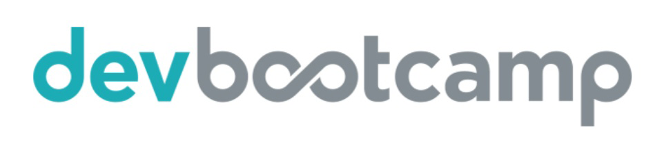

RailsBridge
Workshop for Women
November 20-21, 2015 · San Francisco, CA
Workshop for Women
November 20-21, 2015 · San Francisco, CA
Get a name tag! Eat some food! Talk to another human!
Internet! (WiFi SSID: WeWork, password: p@ssw0rd)
We'll break into small groups after a brief presentation.
Where are we?
BUT INSTEAD YOUR SPONSOR LOGO!!!
Today is open source.
This workshop is a community project built by MANY volunteers. All of the materials are open source!
- The code: http://www.github.com/railsbridge
- Curricula & Installfest: http://docs.railsbridge.org
- More info: http://www.railsbridge.org
What is open source?
"Generally, open source refers to a computer program in which the source code is available to the general public for use and/or modification from its original design."
http://en.wikipedia.org/wiki/Open_source
It makes the Internet run!
Why are we here?
To learn Ruby on Rails!
And what is that?
That is an excellent question.
But first, let's talk about the Internet.
…AND HOW IT WORKS
Web Application Plumbing

Ruby is a programming language.
- First released in 1995.
- It's an object-oriented, general-purpose language.
<opinion>It's quite nice.</opinion>
# Outputs "I love Ruby"
say = "I love Ruby"
puts say
# Outputs "I *LOVE* RUBY"
say['love'] = "*love*"
puts say.upcase
# Outputs "I *love* Ruby" five times
5.times { puts say }Rails is a framework.
A framework is a collection of scripts and utilities that simplify writing web applications, kind of like a template!
Why do we use it?
- It's written in the Ruby language.
- It's opinionated.
- It emphasizes convention over configuration.
- It encourages DRY — Don't Repeat Yourself — coding.
- It's database-agnostic.
- Open-sourced in 2004!
RAILS is a FRAMEWORK
for
WEB APPLICATIONS
written in the
RUBY PROGRAMMING LANGUAGE.
 +
+
 =
♥
=
♥
What are we doing today?
Some of us will learn Ruby from the ground up.
Focus on learning to program.
Some of us will learn Rails, Heroku, and Git.
Focus on tools and building a web application.
Ground Rules
As a community, RailsBridge works to make tech more accessible and more awesome. We have a Code of Conduct that is super important, and it includes an anti-harassment policy that we take very seriously.
If you are harassed or witness harassment, please let an organizer or volunteer know as soon as you comfortably can.
The complete text of our Code of Conduct can be found at http://railsbridge.github.io/code-of-conduct.
APPROXIMATE Schedule
- 9 - 9:30am: Sign in, coffee, breakfast
- 9:45 - 10:15am: Intro!
- 10:15 - 11:15am: Session 1
- 11:30 - 12:30pm: Session 2
- 12:30 - 1:30pm: Lunch!
- 1:30 - 2:45pm: Session 3
- 3:00 - 4:15pm: Session 4
- 4:15 - 5pm: Wrapup and final questions
- 5pm - onward: Beer O'Clock. After party at (location!)
Ask Questions!
If you're wondering something, there is a 90% chance someone else is wondering it, too. Help out & ask!
Don't be shy!
Or if you're a shy person, that's cool, too. TAs and teachers are here to help.
Oh no! I'm in the wrong section!
Ain't no thang.
If your class doesn't seem like a good fit, it's TOTALLY OKAY to get up and move.
Find an organizer and tell them where you're coming from, and what you're looking for in terms of level.
(Nobody will get offended, promise! We want you to be in the right place.)
Ready? Break!

You came.
You saw.
You Ruby'd.
You Rail'd.
How'd it go?
Help Us Level Up
Right after this presentation
We'll split up to have student and volunteer retros to talk about what was awesome and places for improvement.
In the coming days
We'll email you an anonymous survey about the workshop. Be honest! We love your opinions.
Feel like helping? Fantastic!
- Volunteer!
TA or teach at the next workshop. It's a great way to learn, and as a recent student you'll know what can be hard. - Organize!
Rails expertise not required. Cat-herding skills helpful. - Help with the curriculum!The curriculum can always be improved. We'd love to help with your first or fiftieth pull request.
- Spread the word!Tell your friends about RailsBridge. <3!
How do I keep learning?
- We've collected our favorite tutorials, books, and references at http://railsbridge.org/learn/resources.
- If there's anyone you connected with today, exchange contact info with them and meet up to work on something!
- Ask a volunteer (or me) what their favorite local meetup is, or other favorite in-person resources.
- Also: Come back again! (Duh.)
The End
Let's go chat and become super party friends!
(After the retros :D)